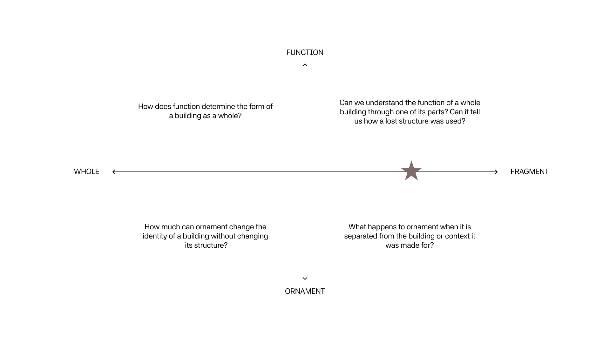
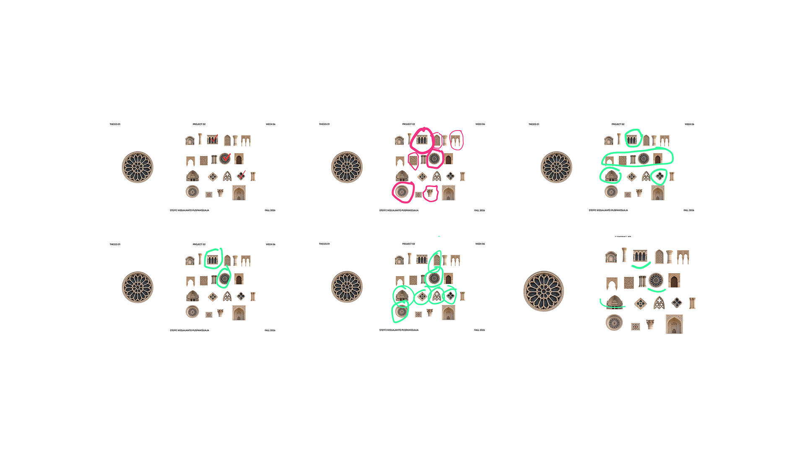

Week 06
Prototype 01 Progress

Central Question
How does context shape the way we understand architecture?
Experiment
An interactive digital excavation where users are initially presented with an isolated architectural fragment with no information about the building it came from. They examine its shape, material, pattern, ornament, scale, and condition, then use these clues to interpret what the original architecture may have been. As they explore, additional layers of evidence are gradually revealed. Each new piece of evidence changes or challenges the user's understanding until the original building and context are finally revealed. The experiment investigates how much we can understand about architecture from fragments alone, and how our interpretation changes as context is reconstructed.
- 01 / Discover a Fragment: Choose an unidentified architectural fragment with no contextual information.
- 02 / Reconstruct the Context: Using a digital kit of cut-out architectural elements, the user can build an environment they believe the fragment originally belonged to.Replace drawings with the field photographs
- 03 / Reveal the Original: Once the reconstruction is submitted, the user can reveal the original context of the fragment.
- 04/ Compare and Reflect: The user can save the reconstruction and see how other users have reconstructed the same fragment.
